Unha viaxe ilustrada no tempo
Embárcate nunha aventura visual con Destino viquingo: A comarca do Salnés. Explora a rica historia das incursións viquingas en Galicia co apoio de impresionantes ilustracións e mapas que che axudarán a visualizar cada detalle.
Roteiros de sendeirismo viquingas polo Salnés
Explora os mesmos camiños que percorreron os viquingos cos roteiros de sendeirismo propostas en Destino viquingo: A comarca do Salnés. Utiliza a app Wikiloc para seguir as nosas rutas e vivir a historia en primeira persoa.

Contido
Páxinas 9 - 27
A Era viquinga
Aproximación á historia dos pobos viquingos e a súa cultura, sociedade, economía…
Páxinas 29 - 37
A Galicia medieval
Análise do contexto cultural e social da Galicia medieval e a súa preparación para a guerra.
Páxinas: 39 - 59
As incursións en Galicia
Repaso a cada unha das grandes incursións dos viquingos en Galicia.
Páxinas: 60 - 91
Recursos
Roteiros de sendeirismo, glosario, bibliografía e textos do libro en castelán.
Rubén Arturo Terré Lameiro
Autor de "Destino viquingo: a comarca do Salnés"
Rubén Arturo Terré Lameiro (Vigo, 1988) é licenciado en Historia pola Universidade de Santiago de Compostela cun Mestrado Oficial en Estudos Medievais Europeos (USC). Ademais, é autor de libros e historiador cun profundo interese na historia medieval, particularmente na Era Viquinga. A súa fascinación por este período histórico levouno a mergullarse nos seus estudos e a cultivar un coñecemento excepcional sobre a cultura, as tradicións e as expedicións dos viquingos. Ademais da súa paixón pola historia medieval, Rubén é un talentoso deseñador gráfico, desenvolvedor web e docente. Esta combinación de habilidades permitiulle non só investigar e escribir sobre a Era Viquinga, senón tamén comunicar os seus coñecementos de maneira visualmente atractiva a través dos seus deseños e desenvolvementos dixitais.